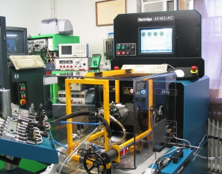

|  |
|---|
| Kattints a képre a videó lejátszásához! |
|
AVM 1 TIPUSU PRÓBAPAD Az angol gyártmányú HARTRIDGE AVM típusú próbapadját 1992-ben fejlesztette ki. A villanymotor közvetlenül a tengelyérõl hajtja meg a csatlakozó kuplungon keresztül a felszerelt adagolót. A próbapad vezérlését közvetlenül az LCD képernyõ alatt található billentyûzettel lehet mûködtetni. A mennyiségmérõ rendszer egy teljesen újszerû elven mûködik. Minden mérõporlasztó mikroszûrõn, mágnesszeleppel vezérelve jutatja egy közös hengertérbe a befecskendezett mérõolajat. Ez a hengertér egy dugattyúval van határolva. Minden egyes befecskendezés hatására a dugattyú elmozdul. Az elmozdulás mértéke arányos a befecskendezett olaj mennyiségével. A CNC technikából már jól ismert ezred mm pontosságú útmérõ rendszer össze van kapcsolva az elmozduló dugattyúval. A számítógépes program az elmozdulás mértékét azonnal átváltja a befecskendezési mennyiségre, és egyben be is azonosítja a hozzátartozó mérõhellyel. A mérõporlasztó tartótorony csuklósan, le-föl süllyeszthetõen állítható. Így a legrövidebb mérõcsövekkel is közvetlenül rácsatlakozhatunk az adagolóról a porlasztóra. A fordulatszám, turbónyomás, elõtöltés útmérés, fokolás digitálisan mért értékei szintén megjeleníthetõk a képernyõn. Így az adagoló beszabályozáshoz szükséges összes érték egy közös képernyõn látható. A beállítandó fordulatszám programozható is, de közvetlenül kézzel is beírható. A fordulatot terheléstõl függetlenül + - 1 fordulat pontossággal tartja az elektronikus szabályozás. Az LCD képernyõ feletti mechanikus nyomásmérõ-órákon látható a betápláló, tápszivattyú, fokoláshoz szükséges nagynyomás. A képernyõ jobb- és baloldalán egy-egy vészleállító piros nyomógomb van. A mérõolaj-tartály fûtése 20 -45 Celsius fokig programozhatóan állítható. Ha az adagoló hatására mégis túlmelegszik, akkor egy hõcserélõn keresztül, a próbapadra kötött hálózati csapvíz rövid idõn belül visszahûti a kívánt mértékre. AVM PC-2 TIPUSU PRÓBAPAD 1998-ban került kifejlesztésre, amikor már jól látható volt, hogy az új típusú Common Rail, PDE stb. rendszerek közvetlen számítógépes program felügyelettel kell, hogy ellenõrizhetõek, beszabályozhatóak legyenek. Kifejlesztésre került a CR rendszerekhez szükséges védõketrec, a hozzátartozó nyomásmérõ rendszerrel. Ez alkalmas a Bosch, Delphi, Denso, Siemens szivattyúk ellenõrzésére. Szintén kapható már a próbapadra felszerelhetõ PDE, PDL szivattyúegység vizsgálatához szükséges toronyegység, a különbözõ átszerelõ kittekkel. 2005 nyarán mutatták be a bolognai vásáron mûködés közben, a Cr porlasztó vizsgáló berendezésüket, mely szintén ehhez a próbapadhoz csatlakozik. |